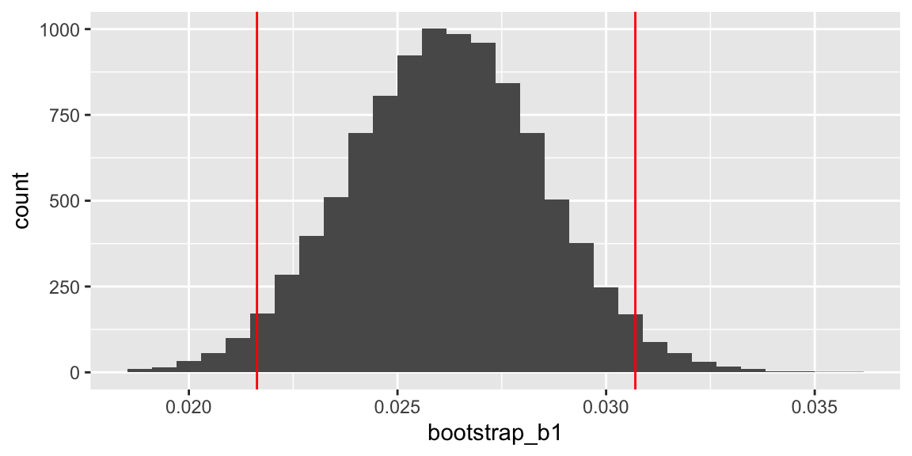
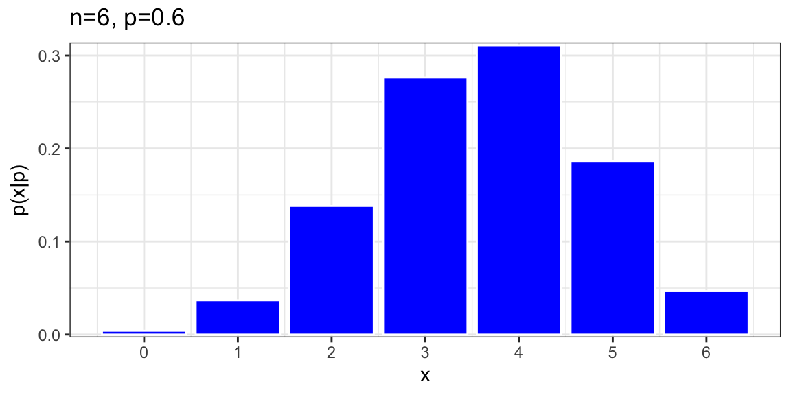

Chapter 8 Multilevel Generalized Linear Models
Interpret fixed and random effects in a generalized linear mixed effects model.
Write equations for generalized linear models in mathematical notation, including assumptions about distributions of random effects and error terms.
These notes provide a summary of Chapter 11 in Beyond Multiple Linear Regression by Roback and Legler. Much of the code that appears here comes from the textbookâs Github repository.
# Packages required for Chapter 11
library(gridExtra)
library(lme4)
library(pander)
library(ggmosaic)
library(knitr)
library(kableExtra)
library(broom)
library(tidyverse)In basketball, do referees tend to âeven outâ calls over the course of a game? Is a team more likely to have a foul called on them if the last foul was called on the other team, or if the other team has had more fouls called in the game up to that point?
8.1 Basketball Referees Dataset
8.1.1 Data Overview
Data was collected for 4972 fouls over 340 college basketball games during the 2009-2010 season. We focus on fouls called during the first half to avoid the issue of intentional fouls by the trailing team at the end of games.
The dataset includes the following variables.
game= unique game identification numberdate= date game was played (YYYYMMDD)visitor= visiting team abbreviationhometeam= home team abbreviationfoul.num= cumulative foul number within gamefoul.home= indicator if foul was called on the home teamfoul.diff= the difference in fouls before the current foul was called (home - visitor)score.diff= the score differential before the current foul was called (home - visitor)lead.home= indicator if home team has the leadprevious.foul.home= indicator if previous foul was called on the home teamfoul.type= categorical variable if current foul was offensive, personal, or shootingtime= number of minutes left in the first half when foul called
refdata <- read.csv("https://raw.githubusercontent.com/proback/BeyondMLR/master/data/basketball0910.csv")
refdata <- refdata %>% select(game, visitor, hometeam, foul.num, foul.home, foul.diff, score.diff, lead.home, previous.foul.home, foul.type, time)
head(refdata) # examine first 6 rows## game visitor hometeam foul.num foul.home foul.diff score.diff lead.home
## 1 1 IA MN 1 0 0 7 1
## 2 1 IA MN 2 1 -1 10 1
## 3 1 IA MN 3 1 0 11 1
## 4 1 IA MN 4 0 1 11 1
## 5 1 IA MN 5 0 0 14 1
## 6 1 IA MN 6 0 -1 22 1
## previous.foul.home foul.type time
## 1 0 Personal 14.166667
## 2 0 Personal 11.433333
## 3 1 Personal 10.233333
## 4 1 Personal 9.733333
## 5 0 Shooting 7.766667
## 6 0 Shooting 5.566667For our initial analysis, our primary response variable is the binary variable foul.home.
Our hypothesis is that the probability a foul is called on the home team is inversely related to the foul differential; that is, if more fouls have been called on the home team than the visiting team, the next foul is less likely to be on the home team.
Our data are measured at multiple levels:
- Level 1 Observational Unit: Individual fouls
- Level 1 Explanatory Variables: foul.num, foul.diff, score.diff, lead.home, previous.foul.home, time,
- Level 2 Observational Unit: Games
- Level 2 Variables: Home and Visiting Teams
We donât have data on these, but other potentially relevant level 2 variables might include attendance, or teams rankings.
Our response variable (whether or not the fouls was on the home team) is a binary variable that might be modeled using logistic regression.
We have not yet worked with logistic regression, or other generalized linear models, with multilevel datasets.
8.1.2 Histograms for Level One Covariates
Histograms for the continuous Level One covariates (time remaining, foul differential, and score differential).
# Summarize Level 1 covariates (and responses) by ignoring
# within subject correlation and pretending all observations
# are independent
time.hist <- ggplot(data = refdata, aes(x = time)) +
geom_histogram(binwidth = 2, color = "black", fill = "white") +
xlab("Time left in first half") + ylab("Frequency") + labs(title = "(a)")
score.hist <- ggplot(data = refdata, aes(x = score.diff)) +
geom_histogram(binwidth = 5, color = "black", fill = "white") +
xlab("Score difference (home-visitor)") +
ylab("Frequency") + labs(title = "(b)")
foul.hist <- ggplot(data = refdata, aes(x = foul.diff)) +
geom_histogram(binwidth = 1.5, color = "black", fill = "white") +
xlab("Foul difference (home-visitor)") +
ylab("Frequency") + labs(title = "(c)")Figure 8.1: Histograms showing distributions of the 3 continuous Level One covariates: (a) time remaining, (b) score difference, and (c) foul difference.
refdata %>% summarize(Mean_Score_Diff=mean(score.diff),
Home_Ahead = mean(score.diff>0),
Mean_Foul_Diff = mean(foul.diff),
Prop_Fouls_Home=mean(foul.home) )## Mean_Score_Diff Home_Ahead Mean_Foul_Diff Prop_Fouls_Home
## 1 2.038013 0.5711987 -0.3596138 0.4794851On average, the home team is ahead by 2 points averaging across all observations. The home team is ahead in 57% of all observations.
48% of fouls called were against the home team. On average, the home team had 0.35 fewer fouls than the visitor at any given time.
8.1.3 Average Fouls by Team
Accounting for the effect of home and visiting team will likely be an important part of our model, since some teams tend to play in games with twice as many fouls called as others, and other teams see a noticeable disparity in the total number of fouls depending on if they are home or away.
| Team | Fouls | Team | Fouls | Team | Fouls | |
|---|---|---|---|---|---|---|
| Top 3 | Duke | 20.0 | WVa | 21.4 | Duke | 4.0 |
| VaTech | 19.4 | Nova | 19.0 | Wisc | 2.6 | |
| Nova | 19.1 | Wake | 18.6 | Pitt | 2.3 | |
| Bottom 3 | Mich | 10.6 | Wisc | 10.4 | WVa | -6.9 |
| Ill | 11.6 | Mich | 11.1 | Mia | -2.7 | |
| MN | 12.1 | PSU | 11.3 | Clem | -2.6 |
Lots of fouls are called in games where Duke, VaTech, and Nova are the home team, or when WVa, Nova, or Wake are the away team.
Few fouls are called when Mich, Ill, and MN are the home team, or when Wisc, Mich, and PSU are the away team.
There are more total fouls called in games where Duke, Wisc, and Pitt are home than when they are away. The opposite is true of WVa, Mia, and Clem.
8.1.4 Examining Bivariate Relationships
We begin by observing broad trends involving all 4972 fouls called, even though fouls from the same game may be correlated. The conditional density plots in the first row examine continuous Level One covariates.
foul.df <- refdata %>%
filter(foul.diff >= -7 & foul.diff <= 5) %>%
group_by(foul.diff) %>%
summarise(foul.phats = mean(foul.home)) %>%
mutate(foul.elogits = log(foul.phats/(1 - foul.phats)) )score.df <- refdata %>%
filter(score.diff >= -11 & score.diff <= 18) %>%
group_by(score.diff) %>%
summarise(score.phats = mean(foul.home)) %>%
mutate(score.elogits = log(score.phats/(1 - score.phats)) )time.df <- refdata %>%
mutate(group = cut(time,
breaks = c(-Inf, 2, 4, 6, 8, 10, 12, 14, 16, 18, Inf),
labels = c(1, 3, 5, 7, 9, 11, 13, 15, 17, 19))) %>%
mutate(times = as.numeric(levels(group))[group]) %>%
select(-group) %>%
group_by(times) %>%
summarise(time.phats = mean(foul.home)) %>%
mutate(time.elogits = log(time.phats/(1 - time.phats)) )refdata <- refdata %>%
mutate(foul.factor = as.factor(ifelse(foul.home == 1,
"Home", "Visitor")) )foul.cd <- ggplot(data = refdata, aes(x = foul.diff)) +
theme(legend.title = element_blank()) +
geom_density(aes(fill = foul.factor), position = "fill",
adjust = 2, alpha = 0.5) +
xlab("Foul difference (H-V)") +
ylab("Probability of Home Foul") +
labs(title="(a)") +
scale_fill_manual(values = c("grey20", "grey80"))
score.cd <- ggplot(data = refdata, aes(x = score.diff)) +
theme(legend.title = element_blank()) +
geom_density(aes(fill = foul.factor), position = "fill",
adjust = 2, alpha = 0.5) +
xlab("Score difference (H-V)") +
ylab("Probability of Home Foul") +
labs(title="(b)") +
scale_fill_manual(values = c("grey20", "grey80"))
time.cd <- ggplot(data = refdata, aes(x = time)) +
theme(legend.title = element_blank()) +
geom_density(aes(fill = foul.factor), position = "fill",
adjust = 2, alpha = 0.5) +
xlab("Time left in half") +
ylab("Probability of Home Foul") +
labs(title="(c)") +
scale_fill_manual(values = c("grey20", "grey80"))
foul.el <- ggplot(data = foul.df, aes(x = foul.diff,
y = foul.elogits)) +
geom_point(color="dark grey") + xlab("Foul difference (H-V)") +
ylab("Empirical Log-odds of Home Foul") +
labs(title = "(d)") +
geom_smooth(se = FALSE, method = "lm", color = "black")
score.el <- ggplot(data = score.df, aes(x = score.diff,
y = score.elogits)) +
geom_point(color="dark grey") +
xlab("Score difference (H-V)") +
ylab("Empirical Log-odds of Home Foul") +
labs(title = "(e)") +
geom_smooth(se = FALSE, method = "lm", color = "black")
time.el <- ggplot(data = time.df, aes(x = times,
y = time.elogits)) +
geom_point(color="dark grey") +
xlab("Time left in half") +
ylab("Empirical Log-odds of Home Foul") +
labs(title = "(f)") +
geom_smooth(se = FALSE, method = "lm", color = "black")![Conditional density and empirical logit plots of the binary model response (foul called on home or visitor) vs. the three continuous Level One covariates (foul differential, score differential, and time remaining). The dark shading in a conditional density plot shows the proportion of fouls called on the home team for a fixed value of (a) foul differential, (b) score differential, and (c) time remaining. In empirical logit plots, estimated log odds of a home team foul are calculated for each distinct foul (d) and score (e) differential, except for differentials at the high and low extremes with insufficient data; for time (f), estimated log odds are calculated for two-minute time intervals and plotted against the midpoints of those intervals.](Stat-455-Notes_files/figure-html/gmu-cdelogitmat1-1.png)
Figure 8.2: Conditional density and empirical logit plots of the binary model response (foul called on home or visitor) vs. the three continuous Level One covariates (foul differential, score differential, and time remaining). The dark shading in a conditional density plot shows the proportion of fouls called on the home team for a fixed value of (a) foul differential, (b) score differential, and (c) time remaining. In empirical logit plots, estimated log odds of a home team foul are calculated for each distinct foul (d) and score (e) differential, except for differentials at the high and low extremes with insufficient data; for time (f), estimated log odds are calculated for two-minute time intervals and plotted against the midpoints of those intervals.
Figure (a) provides support for our primary hypothesis about evening out foul calls, indicating a very strong trend for fouls to be more often called on the home team at points in the game when more fouls had previously been called on the visiting team.
Figures (b) and (c) then show that fouls were somewhat more likely to be called on the home team when the home teamâs lead was greater and (very slightly) later in the half.
Conclusions from the conditional density plots in Figures (a)-(c) are supported with associated empirical logit plots in Figures (d)-(f). If a logistic link function is appropriate, these plots should be linear, and the stronger the linear association, the more promising the predictor.
We see in Figure (d) further confirmation of our primary hypothesis, with lower log-odds of a foul called on the home team associated with a greater number of previous fouls the home team had accumulated compared to the visiting team.
Figure (e) shows that game score may play a role in foul trends, as the log-odds of a foul on the home team grows as the home team accumulates a bigger lead on the scoreboard.
Figure (f) shows a very slight tendency for greater log-odds of a foul called on the home team as the half proceeds (since points on the right are closer to the beginning of the game).
8.1.5 Tabular Summary by Fouling Team
refdata %>% group_by(foul.home) %>% summarize(Mean_foul.diff=mean(foul.diff),
Mean_diff=mean(score.diff),
Mean_time=mean(time))## # A tibble: 2 Ã 4
## foul.home Mean_foul.diff Mean_diff Mean_time
## <int> <dbl> <dbl> <dbl>
## 1 0 -0.102 1.41 9.50
## 2 1 -0.639 2.72 9.23Conclusions about continuous Level One covariates are further supported by summary statistics calculated separately for fouls called on the home team and those called on the visiting team. For instance, when a foul is called on the home team, there is an average of 0.64 additional fouls on the visitors at that point in the game, compared to an average of 0.10 additional fouls on the visitors when a foul is called on the visiting team. Similarly, when a foul is called on the home team, they are in the lead by an average of 2.7 points, compared to an average home lead of 1.4 points when a foul is called on the visiting team. As expected, the average time remaining in the first half at the time of the foul is very similar for home teams and visitors (9.2 vs. 9.5 minutes, respectively).
8.1.6 Mosaic Plots
refdata <- refdata %>%
mutate(leadyes = ifelse(lead.home == 0, "No", "Yes"),
prevyes = ifelse(previous.foul.home == 0, "No", "Yes")) %>%
rename(whofoul = foul.factor)
barplot2 <- ggplot(data = refdata) +
geom_mosaic(aes(weight = 1, x = product(whofoul, leadyes),
fill = whofoul)) +
xlab("Home Team in Lead") +
ylab("Proportion within Leading Team") +
labs(title = "(a)") + scale_fill_grey() +
theme(legend.title = element_blank())
barplot3 <- ggplot(data = refdata) +
geom_mosaic(aes(weight = 1, x = product(whofoul, prevyes),
fill = whofoul)) +
xlab("Previous Foul on Home Team") +
ylab("Proportion within Previous Foul") +
labs(title = "(b)") + scale_fill_grey() +
theme(legend.title = element_blank()) Figure 8.3: Mosaic plots of the binary model response (foul called on home or visitor) vs. the categorical Level One covariates (team in the lead (a), and team called for the previous foul (b)). Each bar shows the percentage of fouls called on the home team vs. the percentage of fouls called on the visiting team for a particular category of the covariate. The bar width shows the proportion of fouls at each of the covariate levels.
Fouls were more likely to be called on the home team when the home team was leading, when the previous foul was on the visiting team
8.2 Multilevel Generalized Linear Model
8.2.1 Motivation for a Statistical Model
The exploratory analyses presented above are an essential first step in understanding our data, seeing univariate trends, and noting bivariate relationships between variable pairs. However, our important research questions (a) involve the effect of foul differential after adjusting for other significant predictors of which team is called for a foul, (b) account for potential correlation between foul calls within a game (or within a particular home or visiting team), and (c) determine if the effect of foul differential is constant across game conditions. In order to address research questions such as these, we need to consider multilevel, multivariate statistical models for a binary response variable.
Weâll begin by modeling the probability of a foul on the home team, using foul difference as the explanatory variable.
Let \(Y_{ij}\) represent an indicator variable for whether the \(j\)th foul in game \(i\) was on the home team. That is
\[ Y_{ij} =\begin{cases} 1 & \text{if $j$th foul in game $i$ was on home team} \\ 0 & \text{if $j$th foul in game $i$ was on away team } \end{cases} \]
We assume:
\[ Y_{ij}\sim\text{Ber}(p_{ij}) \]
In an ordinary logistic regression model, we would say
\[ \log\bigg(\frac{p_{ij}}{1-p_{ij}}\bigg)=\beta_0+\beta_1\text{foul.diff}_{ij} \]
8.2.2 A GLM Approach
We fit the logistic regression model in R
# Logistic regression model (not multilevel)
M0 = glm(foul.home ~ foul.diff,
family = binomial, data = refdata)
summary(M0)
Call:
glm(formula = foul.home ~ foul.diff, family = binomial, data = refdata)
Deviance Residuals:
Min 1Q Median 3Q Max
-1.5817 -1.1227 -0.9654 1.1772 1.5225
Coefficients:
Estimate Std. Error z value Pr(>|z|)
(Intercept) -0.13005 0.02912 -4.466 7.98e-06 ***
foul.diff -0.13047 0.01426 -9.148 < 2e-16 ***
---
Signif. codes: 0 '***' 0.001 '**' 0.01 '*' 0.05 '.' 0.1 ' ' 1
(Dispersion parameter for binomial family taken to be 1)
Null deviance: 6884.3 on 4971 degrees of freedom
Residual deviance: 6798.1 on 4970 degrees of freedom
AIC: 6802.1
Number of Fisher Scoring iterations: 48.2.3 Adding Random Effect for Game
The ordinary logistic regression model, treats observations (fouls) as independent. We might expect fouls in the same game to be correlated. To account for this, weâll add a random effect \(u_i\) for games. This gives the link function:
\[ \log\bigg(\frac{p_{ij}}{1-p_{ij}}\bigg)=\beta_0+\beta_1\text{foul.diff}_{ij} + u_i, \]
where \(u_i\sim\mathcal{N}(0,\sigma_u^2)\).
8.2.4 Two Level Logistic Model
Let \(Y_{ij}\) represent an indicator variable for whether the \(j\)th foul in game \(i\) was on the home team. That is
\[ Y_{ij} =\begin{cases} 1 & \text{if $j$th foul in game $i$ was on home team} \\ 0 & \text{if $j$th foul in game $i$ was on away team } \end{cases} \]
We assume:
\[ Y_{ij}\sim\text{Ber}(p_{ij}) \]
where,
\[ \log\bigg(\frac{p_{ij}}{1-p_{ij}}\bigg)=\beta_0+\beta_1\text{foul.diff}_{ij} + u_i, \]
and \(u_i\sim\mathcal{N}(0,\sigma_u^2)\).
8.2.5 Multilevel GLM in R
We fit a multilevel generalized linear model in R using the glmer() function.
M1 <- glmer(foul.home ~ foul.diff + (1|game), family = binomial(link="logit"), data = refdata)
summary(M1)## Generalized linear mixed model fit by maximum likelihood (Laplace
## Approximation) [glmerMod]
## Family: binomial ( logit )
## Formula: foul.home ~ foul.diff + (1 | game)
## Data: refdata
##
## AIC BIC logLik deviance df.resid
## 6792.5 6812.1 -3393.3 6786.5 4969
##
## Scaled residuals:
## Min 1Q Median 3Q Max
## -1.6995 -0.9055 -0.6518 0.9655 1.6849
##
## Random effects:
## Groups Name Variance Std.Dev.
## game (Intercept) 0.273 0.5225
## Number of obs: 4972, groups: game, 340
##
## Fixed effects:
## Estimate Std. Error z value Pr(>|z|)
## (Intercept) -0.18886 0.04434 -4.259 2.05e-05 ***
## foul.diff -0.26821 0.03895 -6.887 5.71e-12 ***
## ---
## Signif. codes: 0 '***' 0.001 '**' 0.01 '*' 0.05 '.' 0.1 ' ' 1
##
## Correlation of Fixed Effects:
## (Intr)
## foul.diff 0.368Assuming the foul differential is even, the odds of a foul being called on the home team are: \(e^{-0.18886} = 0.83:1\)
Equivalently, the probability of a foul called going against the home team when the foul differential is even is \(\frac{e^{-0.18886}}{1+e^{-0.18886}}\approx0.45\).
Considering foul differential, for each additional fouls that the home team has, compared to the away team, the odds of the next foul going against the home team multiply by a factor of \(e^{-0.26821} = 0.76\), on average.
The estimate of \(\sigma_u\) is 0.5225. This is the standard deviation in game level random effects. This is difficult to interpret in a meaningful way. (Why does it not represent the standard deviation in number of fouls called between different games?)
Notice that estimates change after accounting for in-game correlation, and standard errors increase.
8.2.6 Add Random Slope
The previous model assumes that the effect of foul differential on the probability of the next foul going on the home team is the same across games.
We might add a random slope term to allow this effect to vary between games.
Model:
\[ Y_{ij}\sim\text{Ber}(p_{ij}) \]
where,
\[ \log\bigg(\frac{p_{ij}}{1-p_{ij}}\bigg)=\beta_0+\beta_1\text{foul.diff}_{ij} + u_i + v_i\text{foul.diff}_{ij}, \]
and \[ \left[ \begin{array}{c} u_i \\ v_i \end{array} \right] \sim N \left( \left[ \begin{array}{c} 0 \\ 0 \end{array} \right], \left[ \begin{array}{cc} \sigma_{u}^{2} & \\ \sigma_{uv} & \sigma_{v}^{2} \end{array} \right] \right) \]
8.2.7 Random Slopes Model in R
M2 <- glmer(foul.home ~ foul.diff + (foul.diff|game),
family = binomial(link="logit"), data = refdata)
summary(M2)## Generalized linear mixed model fit by maximum likelihood (Laplace
## Approximation) [glmerMod]
## Family: binomial ( logit )
## Formula: foul.home ~ foul.diff + (foul.diff | game)
## Data: refdata
##
## AIC BIC logLik deviance df.resid
## 6791.1 6823.6 -3390.5 6781.1 4967
##
## Scaled residuals:
## Min 1Q Median 3Q Max
## -1.6399 -0.9087 -0.6349 0.9528 1.7687
##
## Random effects:
## Groups Name Variance Std.Dev. Corr
## game (Intercept) 0.294144 0.54235
## foul.diff 0.001235 0.03514 -1.00
## Number of obs: 4972, groups: game, 340
##
## Fixed effects:
## Estimate Std. Error z value Pr(>|z|)
## (Intercept) -0.15684 0.04637 -3.382 0.000719 ***
## foul.diff -0.28533 0.03835 -7.440 1.01e-13 ***
## ---
## Signif. codes: 0 '***' 0.001 '**' 0.01 '*' 0.05 '.' 0.1 ' ' 1
##
## Correlation of Fixed Effects:
## (Intr)
## foul.diff 0.192
## optimizer (Nelder_Mead) convergence code: 0 (OK)
## boundary (singular) fit: see help('isSingular')8.2.8 AIC, BIC Comparison
AIC(M1)## [1] 6792.54AIC(M2)## [1] 6791.072BIC(M1)## [1] 6812.075BIC(M2)## [1] 6823.63Itâs not clear that adding the random slope makes much difference or is warranted.
8.2.9 Random Error Terms
\[ Y_{ij} =\begin{cases} 1 & \text{if $j$th foul in game $i$ was on home team} \\ 0 & \text{if $j$th foul in game $i$ was on away team } \end{cases} \]
We assume:
\[ Y_{ij}\sim\text{Ber}(p_{ij}) \]
where,
\[ \log\bigg(\frac{p_{ij}}{1-p_{ij}}\bigg)=\beta_0+\beta_1\text{foul.diff}_{ij} + u_i, \]
and \(u_i\sim\mathcal{N}(0,\sigma_u^2)\).
Thought Question Why is there no \(\epsilon_{ij}\) term in the link function?
8.3 Crossed Random Effects
8.3.1 Random Effects for Teams
Our exploratory analysis showed evidence that the probability a foul is called on the home team changes if we know precisely who the home and visiting teams are.
However, if we were to include an indicator variable for each distinct team, we would need 38 indicator variables for home teams and 38 more for visiting teams. This complicates the model and gives a lot of estimates we donât really care about (since weâre not interested in comparing individual teams). It also means spending 38 degrees of freedom, which reduces precision of intervals and power of tests.
Instead, we can treat home and away team as random effects.
8.3.2 Crossed vs Nested Random Effects
Besides the fact that our response variable is binary, thereâs a fundamental difference in the nature of this model compared to prior random effects models weâve seen.
Recall previous random effects models weâve seen. For example, the plants in pots and trays.

In that study, we used random effects for trays, and for pots, but an individual pot could only be within one tray. Thus, all plants in the same pot were necessarily in the same tray. This is an example of nested random effects.
All other random effects models weâve seen to this point have involved nested random effects.
By contrast, the same home team (an visiting team), appears in different games. Thus, the random effect for team is not nested within games. Game, home team, and visiting team are all level two variables, and none is nested in another. These are examples of crossed random effects.
8.3.3 Models for Crossed Random Effects
When using notation like \(Y_{ijk}\), weâre used to having the observational unit indexed by \(k\) nested within the observational unit indexed by \(j\), which is in turn nested within the observational unit indexed by \(i\).
We need a new notation to make sense of crossed random effects.
Let \(Y_{i[vh]j}\) denote the \(j\) foul in the \(i\)th game involving visiting team \(v\) and home team \(h\). We list \(v\) and \(h\) after \(i\), since they are on the same level as game, but place them inside brackets.
Then,
\[ Y_{i[vh]j}\sim\text{Ber}(p_{i[vh]j}) \]
where,
\[ \log\bigg(\frac{p_{i[vh]j}}{1-p_{i[vhj}}\bigg)=\beta_0+\beta_1\text{foul.diff}_{ij} + u_i + w_h+z_v. \]
We assume that the error terms are independent and normally distributed.
\(u_i\sim\mathcal{N}(0,\sigma_u^2), w_h\sim\mathcal{N}(0,\sigma_w^2), z_v\sim\mathcal{N}(0,\sigma_z^2)\).
- \(\beta_{0}\) is the average log odds of a foul on the home team when the foul differential is 0 (fixed)
- \(\beta_{0}\) is the average multiplicative increase in log odds of the next foul being on the home team, for every additional one foul differential in the home teamâs favor
- \(u_{i}\) is the effect of Game \(i\) (random)
- \(w_{h}\) is the effect of Home Team \(h\) (random)
- \(z_{v}\) is the effect of Visiting Team \(v\) (random)
8.3.4 Fitting Model with Crossed Random Effects in R
M3 <- glmer(foul.home ~ foul.diff + (1|game) +
(1|hometeam) + (1|visitor),
family = binomial(link="logit"), data = refdata)
summary(M3)## Generalized linear mixed model fit by maximum likelihood (Laplace
## Approximation) [glmerMod]
## Family: binomial ( logit )
## Formula: foul.home ~ foul.diff + (1 | game) + (1 | hometeam) + (1 | visitor)
## Data: refdata
##
## AIC BIC logLik deviance df.resid
## 6780.5 6813.0 -3385.2 6770.5 4967
##
## Scaled residuals:
## Min 1Q Median 3Q Max
## -1.6589 -0.9056 -0.6522 0.9679 1.7952
##
## Random effects:
## Groups Name Variance Std.Dev.
## game (Intercept) 0.17164 0.4143
## hometeam (Intercept) 0.06809 0.2609
## visitor (Intercept) 0.02323 0.1524
## Number of obs: 4972, groups: game, 340; hometeam, 39; visitor, 39
##
## Fixed effects:
## Estimate Std. Error z value Pr(>|z|)
## (Intercept) -0.18780 0.06331 -2.967 0.00301 **
## foul.diff -0.26385 0.03883 -6.795 1.09e-11 ***
## ---
## Signif. codes: 0 '***' 0.001 '**' 0.01 '*' 0.05 '.' 0.1 ' ' 1
##
## Correlation of Fixed Effects:
## (Intr)
## foul.diff 0.256Interpretations
- \(\hat{\alpha}_{0}=-0.188=\) the mean log odds of a home foul at the point where total fouls are equal between teams. In other words, when fouls are balanced between teams, the probability that a foul is called on the visiting team (.547) is 20.7% (\(1/e^{-.188}=1.207\)) higher than the probability a foul is called on the home team (.453).
- \(\hat{\beta}_{0}=-0.264=\) the decrease in mean log odds of a home foul for each 1 foul increase in the foul differential. More specifically, the odds the next foul is called on the visiting team rather than the home team increases by 30.2% with each additional foul called on the home team (\(1/e^{-.264}=1.302\)).
- \(\hat{\sigma}_{u}^{2}=0.172=\) the variance in log odds of foul going against home team from game-to-game.
- \(\hat{\sigma}_{w}^{2}=0.068=\) the variance in log odds of foul going against home team among different home teams.
- \(\hat{\sigma}_{z}^{2}=0.023=\) the variance in log odds of foul going against home team among different visiting teams.
Based on the t-value (-6.80) and p-value (\(p<.001\)) associated with foul differential in this model, we have significant evidence of a negative association between foul differential and the odds of a home team foul. That is, we have significant evidence that the odds that a foul is called on the home team shrinks as the home team has more total fouls compared with the visiting team. Thus, there seems to be preliminary evidence in the 2009-2010 data that college basketball referees tend to even out foul calls over the course of the first half. Of course, we have yet to adjust for other significant covariates.
An estimated 65.4% of variability in the log odds of foul going against home team is due to differences from game-to-game, while 25.9% is due to differences among home teams, and 8.7% is due to differences among visiting teams.
8.3.5 More on Crossed Effects
Although this was the only time we saw crossed random effects in this course, they are not unique to models with a binomial response. They could have come up in the linear mixed effects models we considered in the first half of the course.
8.3.6 A Final Model for Examining Referee Bias
Section 11.7 in the Roback and Legler text
provides a potential final model that accounts for score differential, time remaining, type of foul, and other potentially relevant covariates.
Among their conclusions, the authors write
âIn general, we see a highly significant negative effect of foul differentialâa strong tendency for referees to even out foul calls when one team starts amassing more fouls than the other. Important covariates to control for (because of their effects on the odds of a home foul) include score differential, whether the home team held the lead, time left in the first half, and the type of foul called.â
8.4 Parametric Bootstrapping
8.4.1 When and Why to Bootstrap
The maximum likelihood estimates, confidence intervals, and hypothesis tests that weâve obtained throughout the class have been based on statistical theory telling us things like:
- In LLSR and linear mixed effects models, regression coefficients follow \(t\)-distributions.
- In generalized linear regresson models, when the sample size is large, regression coefficients are approximately normally distributed.
- Likelihood ratio based tests (like drop-in-deviance tests) follow \(\chi^2\) distributions (or F-distributions for models based on quaasilikelihood).
All of these are based on model assumptions, as well as âlarge-sampleâ theory which will never be exactly true, but are often reasonable approximations.
If we have doubts about model assumptions, like normality, or if our sample size is not that big, we might instead use a simulation-based method to calculate p-values and confidence intervals.
A popular simulation-based approach is the parametric bootstrap.
This is different than the bootstrapping procedude we learned in Stat 255, which is actually called the non-parametric bootstrap.
8.4.2 Parametric Bootstrap Procedure
- Fit the model to the actual data to estimate all parameters (\(\beta\)âs, \(\sigma\)âs, etc.)
- Simulate many datasets from model using estimated parameter values.
- For each simulated dataset, estimate parameters using simulated data.
- Calculate relevant statistics (t-statistics, F-statistics, Likelihood ratioâs, etc.)
- Form confidence intervals using distribution of simulated values.
8.4.3 A Simple Example
Weâll start with a simple example, using a LLSR model. Recall the Kentucky Derby Example in Chapter 1 of the notes.
We used a LSSR model to model a horseâs winning speed, with year (since) 1896 as the explanatory variable.
derby.df <- read.csv("https://raw.githubusercontent.com/proback/BeyondMLR/master/data/derbyplus.csv")
derby.df <- derby.df %>%
mutate( fast = ifelse(condition=="fast",1,0),
good = ifelse(condition=="good",1,0),
yearnew = year - 1896,
fastfactor = ifelse(fast == 0, "not fast", "fast"))- Fit the model to the actual data to estimate all parameters (\(\beta\)âs, \(\sigma\)âs, etc.)
M <- lm(speed ~ yearnew, data = derby.df)
summary(M)
Call:
lm(formula = speed ~ yearnew, data = derby.df)
Residuals:
Min 1Q Median 3Q Max
-3.08190 -0.50026 0.07387 0.67367 1.68720
Coefficients:
Estimate Std. Error t value Pr(>|t|)
(Intercept) 51.588393 0.162549 317.37 <2e-16 ***
yearnew 0.026126 0.002322 11.25 <2e-16 ***
---
Signif. codes: 0 '***' 0.001 '**' 0.01 '*' 0.05 '.' 0.1 ' ' 1
Residual standard error: 0.9032 on 120 degrees of freedom
Multiple R-squared: 0.5134, Adjusted R-squared: 0.5093
F-statistic: 126.6 on 1 and 120 DF, p-value: < 2.2e-16- Simulate many datasets from model using estimated parameter values, and
- For each simulated dataset, estimate parameters using simulated data.
# record estimates from the model
b0 <- M$coefficients[1]
b1 <- M$coefficients[2]
sigma <- summary(M)$sigma
nreps <- 10000
bootstrap_b0 <- c(rep(NA, nreps))
bootstrap_b1 <- c(rep(NA, nreps))
bootstrap_sigma <- c(rep(NA, nreps))
B_Data <- derby.df
# simulate data and fit model
for (i in 1:nreps){
# simulate new data
B_Data <- B_Data %>% mutate(SimSpeed = b0 + b1*yearnew + rnorm(n= nrow(derby.df), mean=0, sd=sigma))
Mb <- lm(data=B_Data, SimSpeed~yearnew) #fit model to simulated data
bootstrap_b0[i] <- Mb$coefficients[1] #record b0 from model on simulated data
bootstrap_b1[i] <- Mb$coefficients[2] #record b1 from model on simulated data
bootstrap_sigma[i] <- summary(Mb)$sigma #record sigma from model on simulated data
}
Bootstrap_Results <- data.frame(bootstrap_b0, bootstrap_b1, bootstrap_sigma)- Calculate relevant statistics (t-statistics, F-statistics, Likelihood ratioâs, etc.)
- Form confidence intervals using distribution of simulated values.
8.4.4 Parametric Bootstrap Confidence Intervals
p1 <- ggplot(data=Bootstrap_Results, aes(x=bootstrap_b0)) + geom_histogram() + geom_vline(xintercept=quantile(bootstrap_b0, c(.025, .975)), color="red")
p1quantile(bootstrap_b0, c(.025, .975))## 2.5% 97.5%
## 51.26868 51.91032p2 <- ggplot(data=Bootstrap_Results, aes(x=bootstrap_b1)) + geom_histogram() + geom_vline(xintercept=quantile(bootstrap_b1, c(.025, .975)), color="red")
p2
quantile(bootstrap_b1, c(.025, .975))## 2.5% 97.5%
## 0.02163246 0.03069958p3 <- ggplot(data=Bootstrap_Results, aes(x=bootstrap_sigma)) + geom_histogram() + geom_vline(xintercept=quantile(bootstrap_sigma, c(.025, .975)), color="red")
p3
quantile(bootstrap_sigma, c(.025, .975))## 2.5% 97.5%
## 0.7903002 1.0182309Theory-Based intervals (based on t-distribution)
confint(M)## 2.5 % 97.5 %
## (Intercept) 51.26655655 51.91022874
## yearnew 0.02152859 0.03072344Thought Question: How is this approach to bootstrapping different than the non-parametric bootstrap we saw in 3.5.8 in the Stat 255 notes? What assumption does the parametric bootstrap make that the non-parameteric bootstrap doesnât?
8.4.5 Model Comparison Tests with Parametric Bootstrap
The distributions of ANOVA F-statistics and other likelihood-ratio-based test statistics for model comparison are vulnerable to deviations from model assumptions. When the assumptions are not valid, these stistics may not follow the distributions they are supposed to (F, \(\chi^2\)), etc.
We can use parametric bootstrapping to approximate the null distribution of these statistics in such situations.
Process:
- Fit full and reduced models and calculate relevant statistic (F-statistic, LRT statistic, etc.)
- Simulate many datasets from the reduced model using estimated parameter values.
- For each simulated dataset, fit the reduced model and full model.
- Calculate statistic for model comparison (F-statistics, Likelihood ratioâs, etc.) on the models fit to the simulated data.
- Look at where the statistic from the actual data (calculated in (1)) lies, relative to those calculated from the simulated data in (4). (Thought question: Under what assumption were these data simulated?). The simulation-based p-value is the proportion of simulated statistics as extreme or more extreme as the one we observed.
8.4.6 Model Comparison for Kentucky Derby Data
M_Red <- lm(speed ~ yearnew, data = derby.df)
M_Full <- lm(speed ~ yearnew + fast + yearnew:fast, data=derby.df)
anova(M_Red, M_Full)## Analysis of Variance Table
##
## Model 1: speed ~ yearnew
## Model 2: speed ~ yearnew + fast + yearnew:fast
## Res.Df RSS Df Sum of Sq F Pr(>F)
## 1 120 97.899
## 2 118 58.991 2 38.908 38.914 1.048e-13 ***
## ---
## Signif. codes: 0 '***' 0.001 '**' 0.01 '*' 0.05 '.' 0.1 ' ' 1The observed F-statistic is 38.914. The associated p-value was calculated from an F-distribution with 2 and 118 df.
If we have concerns about model assumptions, especially normality, the F-statistic might not really follow this F-distribution.
8.4.7 Code for Boostrap Model Comparison
Weâll simulate the distribution of the F-statistic, using the parametric bootstrap.
set.seed(02272022)
# record estimates from reduced model
b0 <- M_Red$coefficients[1]
b1 <- M_Red$coefficients[2]
sigma <- summary(M_Red)$sigma
nreps <- 10000
bootstrap_F <- c(rep(NA, nreps))
B_Data <- derby.df
# simulate data and fit model
for (i in 1:nreps){
# simulate new data from reduced model
B_Data <- B_Data %>% mutate(SimSpeed = b0 + b1*yearnew + rnorm(n= nrow(derby.df), mean=0, sd=sigma))
Mb_Red <- lm(data=B_Data, SimSpeed~yearnew) #fit reduced model to simulated data
Mb_Full <- lm(data=B_Data, SimSpeed ~ yearnew + fast + yearnew:fast) #fit full model to simulated data
bootstrap_F[i] <- anova(Mb_Full, Mb_Red)$F[2]
}
Bootstrap_Results <- data.frame(bootstrap_F)8.4.8 Simulation-Based F-Test
p1 <- ggplot(data=Bootstrap_Results, aes(x=bootstrap_F)) + geom_histogram() + geom_vline(xintercept = 38.914, color="red", linetype="dotted", size=2)
p1
mean(bootstrap_F>38.914)## [1] 0None of our simulations produced a F-statistic even close to the one we observed in our actual data.
There is virtually no chance we would have obtained an F-statistic as large as we saw in the data by chance, if the reduced model was really appropriate. We have strong evidence that the full model is a better fit.
This is consistent with the theory-based F-test.
8.4.9 Model Comparison in Multilevel GLM
M1 <- glmer(foul.home ~ foul.diff + (1|game),
family = binomial(link="logit"), data = refdata)
M2 <- glmer(foul.home ~ foul.diff + (foul.diff|game),
family = binomial(link="logit"), data = refdata)anova(M1, M2)## Data: refdata
## Models:
## M1: foul.home ~ foul.diff + (1 | game)
## M2: foul.home ~ foul.diff + (foul.diff | game)
## npar AIC BIC logLik deviance Chisq Df Pr(>Chisq)
## M1 3 6792.5 6812.1 -3393.3 6786.5
## M2 5 6791.1 6823.6 -3390.5 6781.1 5.4682 2 0.06495 .
## ---
## Signif. codes: 0 '***' 0.001 '**' 0.01 '*' 0.05 '.' 0.1 ' ' 1The \(\chi^2\) statistic of 5.4682 and fairly small p-value provide some evidence in favor of the larger model.
Research has shown that when estimates of variance and covariance of random effects are impacted by boundary constraints, âtheory-basedâ tests like the \(\chi^2\) test used here are too conservative and produce higher p-values than they should.
8.4.10 Multilevel GLM Bootstrap Code
Fitting the model manually gets complicated. The drop and simulate functions in the lme4 package do this automatically.
Weâll simulate data from the reduced model, fit both models, and calculate the \(\chi^2\) statistic, and repeat this 1,000 times.
This establishes a bootstrap distribution for where we would expect this statistic to lie if the reduced model is actually âcorrectâ.
# This takes a LONG time to run!
set.seed(02272022)
nreps <- 1000
ChiSq <- rep(NA, nreps)
for(i in 1:nreps){
SimData <- drop(simulate(M1)) # this command simulates data directly from a model
M1B <-refit(M1, newresp=SimData) # refits M1 to simulated data
M2B <-refit(M2, newresp=SimData) # refits M2 to simulated data
ChiSq[i] <- anova(M1B,M2B)$Chisq[2]
}
ChiSq<- write.csv(ChiSq, file="ChiSq.csv")8.4.11 Simulation-Based \(\chi^2\) Test
p <- ggplot(data=data.frame(ChiSq), aes(x=ChiSq)) + geom_histogram() +
geom_vline(xintercept = 5.4682, color="red", linetype="dotted", size=2)
pmean(ChiSq>5.4682)## [1] 0.037The simulation-based p-value is 0.037. This is slightly smaller than the one based on the Chi-sqare distribution. Research has shown that when boundary constraints are an issue in estimating variance and correlation of random effects, âthory-basedâ tests are too conservative, and often yield p-values that are higher than they should be.
Our results are consistent with this observation.